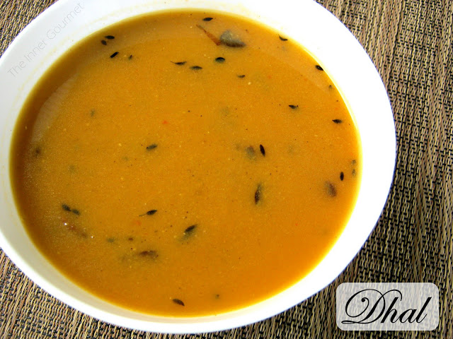

Trini Dhal

Description
Dhal is a Trinbagonian (and Guyanese) staple made from yellow split peas. A versatile dish, it is most commonly enjoyed
atop a bed of white rice accompanied by some type of meat, fish or vegetable
(my personal favourite being curry chicken.)
It is also enjoyed straight from a cup or eaten with roti. It is a hearty dish that nourishes the body
as well as the soul.
Ingredients
- 1 lb dhal (yellow split peas).
- 1 tsp tumeric.
- 1 small onion.
- 3 cloves garlic.
- 1 pimento.
- 2 tsps whole geera (cumin)
- 1 scotch bonnet pepper (optional).
- 3 tbsps vegetable oil (oil of choice can be substituted as long as it has a high smoke-point.)
- 2 tsps baking powder.
- Water.
- Salt and black pepper to taste.
Steps
- Preparation:
- Soak dhal overnight in water with baking powder. Rinse thoroughly before cooking.
- Chop onion, pimento and 2 cloves of garlic into small pieces. Set aside remaining clove of garlic.
- Add softened dhal to a pot together with 3/4 of the onion, chopped garlic, pimento,
scotch bonnet pepper and tumeric. Cover with water.
- Bring to a boil, stirring occasionally.
- In a metal ladle or small saucepan add oil together with remaining onion, garlic clove and geera (cumin). Cook until garlic turns black.
- Once the dhal is tender/breaking apart very carefully add the contents of the ladle/saucepan to the pot.
Pro-tip: Slip the contents of the ladle/saucepan into the dhal and immediately cover as this step
can cause the contents of the pot to splash and bubble.
- Season to taste.
- Serve over white rice by itself or with accompanying dish of choice.
Personal recommendation- curry chicken.
A hand-blender or whisk may be used if a smoother consistency is desired.